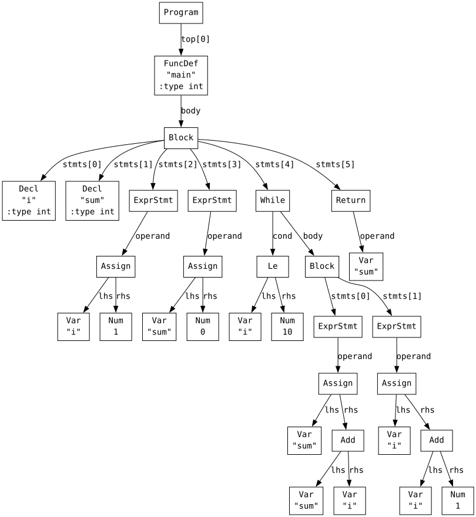
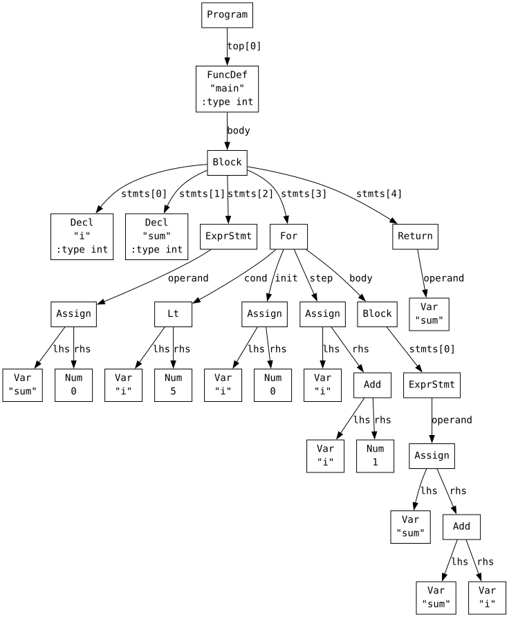
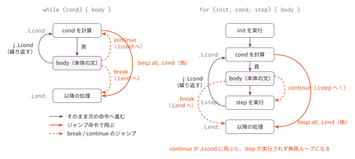

コマ5: while / for / break / continue
今日のゴール
ループとジャンプ制御、そして前置 ++/-- を実装する。
コマ4までは、プログラムは常に先頭から末尾へ1回だけ実行された。
この回では、条件が成り立つ間、同じ処理を繰り返す while と for を扱う。
int main() {
int i;
int sum;
i = 1;
sum = 0;
while (i <= 10) {
sum = sum + i;
i = i + 1;
}
return sum;
}目標は、条件判定・反復・途中脱出・スキップを正しく生成できるようにすることである。
この回で扱う範囲
対象にするプログラムは、main 関数内に以下の要素を含むものに限定する。
| 種類 | 例 |
|---|---|
| while 文 | while (cond) { ... } |
| for 文 | for (init; cond; step) { ... } |
| break 文 | break; |
| continue 文 | continue; |
| 入れ子ループ | while の中に while など |
| ループ内の if | while (cond) { if (...) break; } |
前置 ++/-- |
for (i = 0; i < n; ++i) |
これまでに扱った変数宣言・代入・算術・比較・if/else は、ループの内部でも使用できる。
関数呼び出しとポインタはまだ扱わない。
この回までの言語仕様（EBNF）
この回までに書けるプログラムの文法を、累積の形でまとめる。
記法と最終形の全体像は
language_spec.md の「形式文法（EBNF）」を参照。
scalar_type ::= 'int' /* ポインタはコマ7、char はコマ8 */
obj_type ::= scalar_type
program ::= func_def /* ユーザー定義関数はコマ6 */
var_decl ::= obj_type IDENT ';'
func_def ::= 'int' 'main' '(' ')' func_body /* 一般の関数定義はコマ6 */
func_body ::= '{' { var_decl } { stmt } '}'
stmt ::= expr_stmt
| block
| if_stmt
| while_stmt
| for_stmt
| 'break' ';'
| 'continue' ';'
| 'return' expr ';'
expr_stmt ::= [ expr ] ';'
block ::= '{' { stmt } '}'
if_stmt ::= 'if' '(' expr ')' stmt [ 'else' stmt ]
while_stmt ::= 'while' '(' expr ')' stmt
for_stmt ::= 'for' '(' [ expr ] ';' [ expr ] ';' [ expr ] ')' stmt
expr ::= assign_expr
assign_expr ::= unary_expr '=' assign_expr /* 右結合 */
| cond_expr
cond_expr ::= binary_expr [ '?' expr ':' cond_expr ] /* 右結合 */
binary_expr ::= unary_expr { bin_op unary_expr }
bin_op ::= '*' | '/' | '%' /* 論理 && || はコマ13 */
| '+' | '-'
| '<' | '>' | '<=' | '>='
| '==' | '!='
unary_expr ::= primary_expr
| '-' unary_expr
| '++' unary_expr
| '--' unary_expr
primary_expr ::= INT_LITERAL
| IDENT
| '(' expr ')'この回までの二項演算子の優先順位（高い順）:
| 優先順位 | 演算子 | 結合 |
|---|---|---|
| 1（高） | * / % |
左 |
| 2 | + - |
左 |
| 3 | < > <= >= |
左 |
| 4 | == != |
左 |
表の読み方はコマ1の「木の形は規則で決まっている」と
language_spec.md の「演算子」を参照。
for の3つの式と expr_stmt の式が省略可能になったのがこの回である
（for (;;) と空文 ; が書けるようになる）。
字句トークンの定義はどの回でも同じであるため、ここでは繰り返さない。
language_spec.md の「字句トークン」を参照。
AST を確認する
while のAST
python3 scaffold/parse_viewer.py sessions/05_loops/tests/target.cこのプログラムの内容は次の通り。
int main() {
int i;
int sum;
i = 1;
sum = 0;
while (i <= 10) {
sum = sum + i;
i = i + 1;
}
return sum;
}(program
(funcdef "main" :type int (params)
(block (decl "i" :type int) (decl "sum" :type int)
(exprstmt
(assign (var "i") (num 1)))
(exprstmt
(assign (var "sum") (num 0)))
(while
(cond
(le (var "i") (num 10)))
(body
(block
(exprstmt
(assign (var "sum")
(add (var "sum") (var "i"))))
(exprstmt
(assign (var "i")
(add (var "i") (num 1)))))))
(return (var "sum")))))
while ノードは次のフィールドを持つ。
| フィールド | 役割 |
|---|---|
cond |
条件式ノード。0でなければループを続ける |
body |
ループ本体の文ノード |
for のAST
python3 scaffold/parse_viewer.py sessions/05_loops/tests/for_count.cこのプログラムの内容は次の通り。
int main() {
int i;
int sum;
sum = 0;
for (i = 0; i < 5; i = i + 1) {
sum = sum + i;
}
return sum;
}(program
(funcdef "main" :type int (params)
(block (decl "i" :type int) (decl "sum" :type int)
(exprstmt
(assign (var "sum") (num 0)))
(for
(init
(assign (var "i") (num 0)))
(cond
(lt (var "i") (num 5)))
(step
(assign (var "i")
(add (var "i") (num 1))))
(body
(block
(exprstmt
(assign (var "sum")
(add (var "sum") (var "i")))))))
(return (var "sum")))))
for ノードは次のフィールドを持つ。
| フィールド | 役割 |
|---|---|
init |
初期化式ノード。最初に1回だけ実行する |
cond |
条件式ノード。0でなければループを続ける |
step |
ステップ式ノード。各反復のbody実行後に実行する |
body |
ループ本体の文ノード |
init、cond、step は省略可能である。
省略された部分はAST上で None になる。
たとえば for (;;) はすべての要素が None になる。
while の生成パターン
while (cond) {
body
}これは次の流れに変換する。
Lcond:
cond を codegen する
もし cond の結果が 0 なら Lend に飛ぶ
body を gen_stmt する
Lcond に戻る
Lend:アセンブリの形は次のようになる。
.Lcond:
# cond -> a0
beqz a0, .Lend
# body
j .Lcond
.Lend:cond の計算結果が a0 に入った状態で beqz を置き、偽なら終了ラベルに飛ばす。
真なら body を実行し、j で条件判定に戻る。
for の生成パターン
for (init; cond; step) {
body
}これは次の流れに変換する。
init を codegen する
Lcond:
cond を codegen する
もし cond の結果が 0 なら Lend に飛ぶ
body を gen_stmt する
Lstep:
step を codegen する
Lcond に戻る
Lend:アセンブリの形は次のようになる。
# init
.Lcond:
# cond -> a0
beqz a0, .Lend
# body
.Lstep:
# step
j .Lcond
.Lend:cond が省略されている場合は、常に真として扱う。
その場合、beqz は出さない。
break と continue
break は、現在のループを終了する文である。
コード生成では、現在のループの終了ラベルへジャンプする。
j Lendcontinue は、現在のループの次の反復へ進む文である。
飛び先は while と for で異なる。
| ループ | continue の飛び先 |
|---|---|
while |
条件判定ラベル Lcond |
for |
step実行ラベル Lstep |
for の continue が Lcond に直接飛んでしまうと、i = i + 1 のようなstep処理が実行されず、条件が変わらないまま再チェックされる。
その結果、無限ループになることがある。
for (i = 1; i <= 10; i = i + 1) {
if (i % 2 == 0) {
continue;
}
sum = sum + i;
}この例では、continue は Lstep に飛ぶ必要がある。
Lcond に飛ぶと i が更新されず、無限ループに陥る。

break はどちらのループでも終了ラベルへ飛ぶ。
continue の飛び先だけが、while（Lcond）と for（Lstep）で異なる。
ラベルスタック
ループは入れ子になることがある。
while (i < 3) {
while (j < 2) {
break;
}
}このとき、内側の break は内側のループだけを抜ける必要がある。
外側のループまで抜けてはいけない。
そのため、現在処理中のループのラベルをスタックで管理する。
| インスタンス変数 | 役割 |
|---|---|
self._break_stack |
現在のループの終了ラベルを積む |
self._continue_stack |
現在のループの continue 先ラベルを積む |
ループのコード生成を始めるときにラベルを push し、ループ本体の生成が終わったら pop する。
# while の例
self._break_stack.append(label_end)
self._continue_stack.append(label_cond)
# body を生成 ...
self._continue_stack.pop()
self._break_stack.pop()break や continue を生成するときは、スタックの末尾を見る。
末尾が「現在一番内側のループ」のラベルである。
# break
self.emit(f" j {self._break_stack[-1]}")
# continue
self.emit(f" j {self._continue_stack[-1]}")while では continue先が Lcond、for では continue先が Lstep になる。
ループ本体の生成中に、内側の break / continue が正しく動作するようになる。
前置 ++/--: ループの更新式の慣用形
for 文の更新式には i = i + 1 の代わりに前置インクリメント ++i を書くのが
C の慣用である。この回で実装する。
for (i = 0; i < 10; ++i) {
sum = sum + i;
}++i は「i を 1 増やし、増やした後の値を式の値とする」式である。
実装の要点は、左辺値のアドレスを 1 回だけ求めることである。
def codegen_PreInc(self, node):
self.codegen_lval(node.operand) # アドレスを a0 に
self.emit(' ld a1, 0(a0)') # 値を読む
self.emit(' addi a1, a1, 1') # +1
self.emit(' sd a1, 0(a0)') # 書き戻す
self.emit(' mv a0, a1') # 増やした後の値が式の値--i は -1 するだけで同じ形である。AST 上は (preinc (var "i")) /
(predec (var "i")) というノードになる。
コマ8 で型を導入すると、この実装は「ポインタなら要素サイズぶん進む」形に拡張される。
gen_stmt に追加する処理
node.kind |
呼ばれる handler | 処理 |
|---|---|---|
'While' |
gen_stmt_While |
条件ラベルと終了ラベルを作る。ラベルスタックに push し、条件判定、body、戻りジャンプを生成し、pop する |
'For' |
gen_stmt_For |
init、条件、body、step を生成する。ラベルスタックに push/pop も行う |
'Break' |
gen_stmt_Break |
self._break_stack[-1] へジャンプする |
'Continue' |
gen_stmt_Continue |
self._continue_stack[-1] へジャンプする |
編集するファイル
mycc.py
importlib でコマ4 の Codegen04 を継承した Codegen05 に、以下の要素を追加する。
| 実装対象 | 追加する役割 |
|---|---|
gen_stmt_While(node) |
while ループのコード生成 |
gen_stmt_For(node) |
for ループのコード生成 |
gen_stmt_Break(node) |
break 文のコード生成 |
gen_stmt_Continue(node) |
continue 文のコード生成 |
codegen_PreInc(node) / codegen_PreDec(node) |
前置 ++/-- のコード生成 |
self._break_stack / self._continue_stack |
インスタンス変数を __init__ で追加する |
tests/
| ファイル | 内容 | 期待値 |
|---|---|---|
target.c |
while で 1..10 の総和 | 55 |
for_count.c |
for で 0..4 の総和 | 10 |
nested_loop.c |
while の入れ子 (3×2) | 6 |
break_early.c |
break で抜ける | 15 |
while_sum.c |
while による集計 | 対応する .ans を参照 |
for_fib.c |
for によるフィボナッチ計算 | 対応する .ans を参照 |
break_loop.c |
break を含むループ | 対応する .ans を参照 |
continue_odd.c |
continue を含むループ | 対応する .ans を参照 |
incr_loop.c |
++i を更新式に使うループと --s |
44 |
テスト
python3 scaffold/test_runner.py sessions/05_loopstests/target.c がコンパイルでき、終了コード 55 になれば基本形は成功。
個別に動かす場合は、次のようにする。
python3 sessions/05_loops/mycc.py sessions/05_loops/tests/target.c \
| riscv64-linux-gnu-gcc -x assembler -static - -o out
qemu-riscv64 ./out
echo $?注意
この回のテストでは、break や continue はループの内側にだけ現れる。
ループの外側に書かれた break や continue は扱わない。
for の init, cond, step は省略でき、省略時はAST上で None になる。
cond 省略時は、常に真として扱い、beqz を出さないようにする。
ループが期待どおりの回数だけ回っているか1命令ずつ確認したいときは、RV64 シミュレータ に貼り付ける。
この回の完成形に相当する OCaml 版参考実装が ../../workbook/ocaml/README.md にある。完成相当の実装なので、まず自分の実装方針を検討してから確認すること。